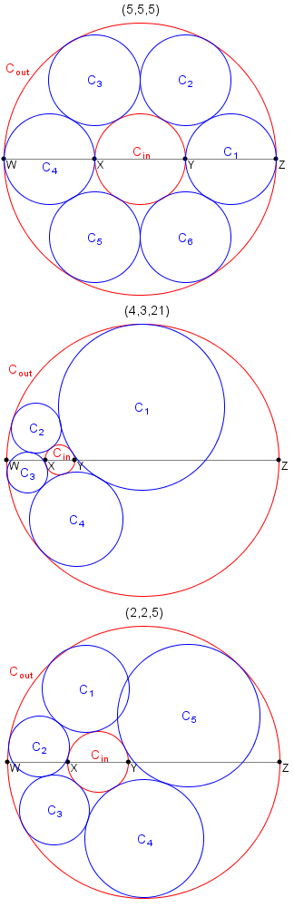

Let $a$, $b$ and $c$ be positive numbers.
Let $W, X, Y, Z$ be four collinear points where $|WX| = a$, $|XY| = b$, $|YZ| = c$ and $|WZ| = a + b + c$.
Let $C_{in}$ be the circle having the diameter $XY$.
Let $C_{out}$ be the circle having the diameter $WZ$.
The triplet $(a, b, c)$ is called a necklace triplet if you can place $k \geq 3$ distinct circles $C_1, C_2, \dots, C_k$ such that:
For example, $(5, 5, 5)$ and $(4, 3, 21)$ are necklace triplets, while it can be shown that $(2, 2, 5)$ is not.

Let $T(n)$ be the number of necklace triplets $(a, b, c)$ such that $a$, $b$ and $c$ are positive integers, and $b \leq n$. For example, $T(1) = 9$, $T(20) = 732$ and $T(3000) = 438106$.
Find $T(1\,000\,000\,000)$.